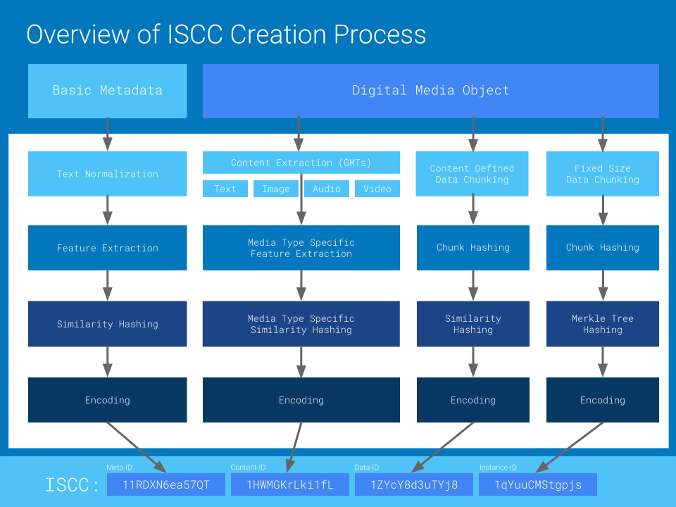
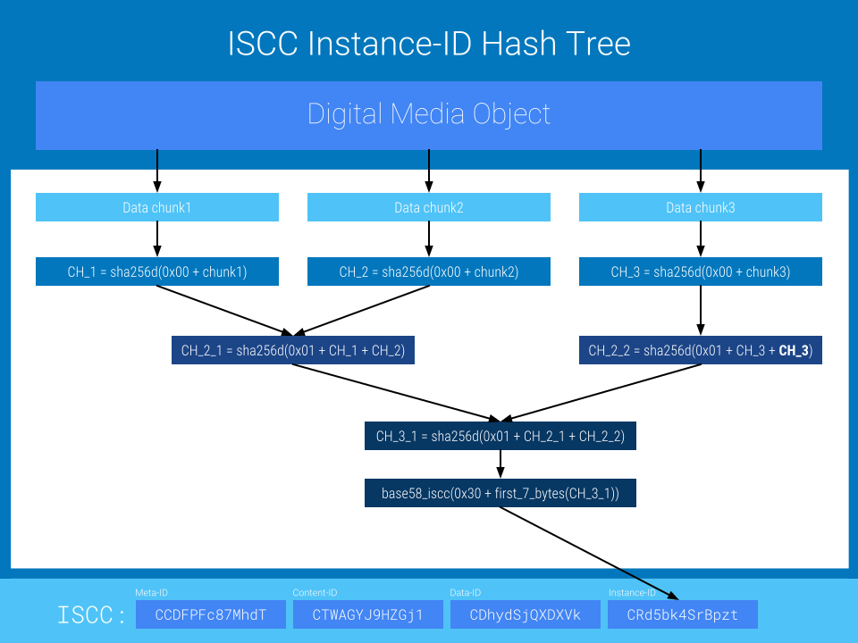

ISCC - Specification Draft¶
Warning
This document is a work in progress draft! It may be updated, replaced, or obsoleted by other documents at any time. This document must not be used as reference material or cited other than as "work in progress".
Abstract¶
The International Standard Content Code (ISCC), is an open and decentralized digital media identifier. An ISCC can be created from digital content and its basic metadata by anybody who follows the procedures of the ISCC specification or by using open source software that supports ISCC creation conforming to the ISCC specification.
Note to Readers¶
For public discussion of issues for this draft please use the Github issue tracker: https://github.com/coblo/iscc-specs/issues.
The latest published version of this draft can be found at http://iscc.codes/specification/.
Public discussion and contributions are welcome.
About this Document¶
This document proposes an open and vendor neutral ISCC standard and describes the technical procedures to create and manage ISCC identifiers. It is produced by the Content Blockchain Project and it aimed to become the definitive guide to the ISCC standard for technical implementors. The content is determined by its authors in an open consensus process.
Conventions and Terminology¶
The key words "MUST", "MUST NOT", "REQUIRED", "SHALL", "SHALL NOT", "SHOULD", "SHOULD NOT", "RECOMMENDED", "MAY", and "OPTIONAL" in this document are to be interpreted as described in RFC 2119 [RFC2119].
Definitions¶
- GMT
- Generic Media Type: A basic digital content type such as UTF-8 encoded plain text or raw pixel data.
- ISCC
- International Standard Content Code
- ISCC Code
- The base32 encoded representation of an ISCC
- ISCC Digest
- The raw binary data of an ISCC
- ISCC ID
- The integer representation of an ISCC
Introduction¶
The ISCC aims to permanently identify the content of a given digital media object at multiple levels of granularity. It is algorithmically generated from basic metadata and the contents of the digital media object which it identifies. It is designed for being registered and stored on a public decentralized blockchain. An ISCC for a media object can be created by anybody, not just by the author or publisher of a content or by a centralized registrar. By itself the ISCC does not make any statement or claim about authorship or ownership of the identified content.
ISCC Structure¶
The ISCC Digest is a fixed size sequence of 32 bytes (256 bits) assembled from multiple sub-components. The printable ISCC Code is an RFC 4648 base321 encoded string representation of an ISCC Digest. This is a high-level overview of the ISCC creation process:

Components¶
The ISCC Digest is built from multiple self-describing 64-bit components:
| Components: | Meta-ID | Content-ID | Data-ID | Instance-ID |
|---|---|---|---|---|
| Context: | Intangible creation | Content similarity | Data similarity | Data checksum |
| Input: | Metadata | Extracted content | Raw data | Raw data |
| Algorithms: | Similarity Hash | Type specific | CDC, Similarity Hash | CDC, Hash Tree |
| Size: | 64 bits | 64 bits | 64 bits | 64 bits |
Each component is guaranteed to fit into a 64-bit unsigned integer value. The components may be used independently by applications for various purposes but must be combined into a 52 character string (55 with hyphens) for a fully qualified ISCC code. The components must be combined in the fixed order of Meta-ID, Content-ID, Data-ID, Instance-ID and may be separated by hyphens.
Todo
Describe coded format with prefix, colon, components +- hyphens
Component types¶
Each component has the same basic structure of a 1-byte header and a 7-byte main section2. Each component can thus be fit into a 64-bit integer value. The header-byte of each component is subdivided into 2 nibbles (4 bits). The first nibble specifies the component type while the second nibble is component specific.
| Component | Nibble-1 | Nibble-2 | Byte |
|---|---|---|---|
| Meta-ID | 0000 | 0000 - ISCC version (0) | 0x00 |
| Content-ID | 0001 | 0000 - ContentType Text (0) | 0x10 |
| Data-ID | 0010 | 0000 - Reserved | 0x20 |
| Instance-ID | 0011 | 0000 - Reserved | 0x30 |
Meta-ID¶
The Meta-ID is built from minimal and generic metadata of the content to be identified. All text information supplied to the META-ID generating function is assumed to be UTF-8 encoded. Errors during decoding the bytestring input to a native Unicode must terminate the process and should not be silenced. An ISCC generating application must provide a generate_meta_id function that accepts the following input fields:
| Name | Type | Required | Description |
|---|---|---|---|
| title | text | Yes | The title of an intangible creation. |
| creators3 | text | No | One or more semicolon separated names of the original creators of the content. |
| extra | text | No | A short statement that distinguishes this intangible creation from another one. |
| version | integer | No | ISCC version number. |
The generate_meta_id function must return a valid base32 encoded Meta-ID component without padding.
Generate Meta-ID¶
An ISCC generating application must follow these steps in the given order to produce a stable Meta-ID:
- Apply Unicode standard Normalization Form KC (NFKC) separately to all text input values.
- Remove all pairs of brackets
[],(),{}, and text inbetween them fromtitleandcreatorsfields. - Trim all text fields, such that their UTF-8 encoded byte representation does not exceed 128-bytes each. The trim point must be such, that it does not cut into multibyte characters. The results of this operation will later be stored as base metadata on the blockchain.
- Cut all text after the first occurence of a semicolon (
;) if that semicolon is after the first 25 characters of text. - Trim each normalized input value to its first 128 characters.
- Apply
normalize_textto the trimmedtitleinput value. - Apply
normalize_creatorsto the trimmedcreatorsinput value. - Apply
normalize_textto the trimmedextrainput value. - Concatenate the results of step 3, 4 and 5 in ascending order.
- Create a list of 4 character n-grams by sliding character-wise through the result of step 6.
- Encode each n-gram from step 7 to an UTF-8 bytestring and calculate its sha256 digest.
- Apply
simhashto the list sha256 digests from step 8. - Trim the resulting byte sequence to the first 7 bytes.
- Prepend the 1-byte component header according to component type and ISCC version (e.g.
0x00). - Encode the resulting 8 byte sequence with base32 (no-padding) and return the result.
Dealing with collisions¶
Ideally we want multiple ISCCs that identify different manifestations of the same intangible creation to be automatically grouped by an identical leading Meta-ID component. We call such a natural grouping an intended collision. Metadata, captured and edited by humans, is notoriously unreliable. By using normalization and a similarity hash on the metadata we account for some of this variation while keeping the Meta-ID component stable.
Auto-generated Meta-IDs components are expected to miss some intended collisions. An application should check for such missed intended collisions before registering a new Meta-ID with the canonical registry of ISCCs by conducting a similarity search and asking for user feedback.
But what about unintended collisions? Such collisions might happen because two different intangible creations have very similar or even identical metadata. But they might also happen simply by chance. With 2^56 possibile Meta-ID components the probability of random collisions rises in an S-cuved shape with the number of deployed ISCCs (see: Hash Collision Probabilities). We should keep in mind that, the Meta-ID component is only one part of an ISCC. Sporadic unintended collisions of the Meta-ID component are generally deemed as acceptable and expected.
If for any reason an application wants to avoid unintended collisions with pre-existing Meta-ID components it may utilze the extra-field. An application must first generate a Meta-ID without asking the user for input to the extra-field and then first check for collisions with the canonical registry of ISCCs. After it finds a collision with a pre-existing Meta-ID it may display the metadata of the colliding entry and interact with the user to determine if it indeed is an unintended collision. Only if the user indicates an unintended collision, may the application ask for a disambiguation that is than added as an ammendment to the metadata via the extra-field to create a different Meta-ID component. The application may repeat the pre-existence check until it finds no collision or a user intended collision. The application must not supply autogenerated input to the extra-field.
It is our opinion that the concept of intended collisions of Meta-ID components is generally usefull concept and a net positive. But one must be aware that this characteristic also has its pitfalls. It is by no means an attempt to provide an unambigous - agreed upon - definition of "identical intangible creations".
Content-ID¶
The Content-ID component has multiple subtypes. Except for the mixed type all subtypes correspond with the Generic Media Types. A fully qualified ISCC can only have a Content-ID component of one specific type, but there can be multiple ISCCs with different Content-ID types per digital media object.
A Content-ID is generated in two broad steps. In the first step, we extract and convert content from a rich media type to a normalized GMT. In the second step, we use a GMT-specific process to generate the Content-ID component of an ISCC.
Content-ID Types¶
The Content-ID type is signaled by the first 3 bits of the second nibble of the first byte of the Content-ID:
| Conent-ID Type | Nibble-2 Bits 0-3 |
|---|---|
| text | 000 |
| image | 001 |
| audio | 010 |
| video | 011 |
| mixed | 100 |
| Reserved | 101, 110, 111 |
Partial Content Flag (PCF)¶
The last bit of the header byte is the "Partial Content Flag". It designates if the Content-ID applies to the full content or just some part of it. The PCF must be set as a 0-bit (full GMT-specific content) by default. Setting the PCF to 1 enables applications to create multiple ISCCs for partial extracts of one and the same digital file. The exact semantics of partial content are outside of the scope of this specification. Applications that plan to support partial Content-IDs should clearly define their semantics. For example, an application might create separate ISCC for the text contents of multiple articles of a magazine issue. In such a scenario
the Meta-, Data-, and Instance-IDs are the compound key for the magazine issue, while the Content-ID-Text component distinguishes the different articles of the issue. The different Content-ID-Text components would automatically be "bound" together by the other 3 components.
Content-ID-Text¶
The Content-ID-Text is built from the extracted plain-text content of an encoded media object. To build a stable Content-ID-Text the plain text content must be extracted in a way that is reproducible. To make this possible we specify that the plain-text content must be extracted with Apache Tika v1.16.
Data-ID¶
The Data-ID is built from the raw encoded data of the content to be identified. An ISCC generating application must provide a generate_data_id function that accepts the raw encoded data as input. Generate a Data-ID by this procedure:
- Apply
chunk_datato the raw encoded content data - For each chunk calculate the sha256 digest
- Apply
minhashwith 256 permutations to the resulting list of digests - Take the lowest bit from each minhash value and concatenate them to a 256 string
- Trim the resulting byte sequence to the first 7 bytes.
- Prepend the 1-byte component header (e.g. 0x20).
- Encode the resulting 8-byte sequence with base32 (no-padding) and return the result
Instance-ID¶
The Instance-ID is built from the raw data of the media object to be identified and serves as basic checksum for the media object. The raw data of the media object is split into data-chunks. Then we build a hash-tree from those chunks and use the truncated top-hash for the Instance-ID:

An ISCC generating application must provide a generate_instance_id function that accepts the raw data file as input and returns an encoded Instance-ID. Generate an Instance-ID by this procedure:
- Apply
chunk_datato the raw bytes of the encoded media object. - For each chunk calculate the sha256d4 digest of the concatenation of a
0x00-byte and the chunk bytes. We call the resulting values leaf node hashes (LNH). - Calculate the next level of the hash tree by applying sha256d to the concatenation of a
0x01-byte and adjacent pairs of LNH values. If the length of the list of LNH values is uneven concatenate the last LNH value with itself. We call the resulting values internal node hashes (INH). - Recursively apply
0x01-prefixed pairwise hashing to the results of step 3 until the process yields only one hash value. We call this value the top hash5. - Trim the resulting top hash to the first 7 bytes.
- Prepend the 1-byte component header (e.g.
0x30). - Encode the resulting 8-byte sequence with base32 (no-padding) and return the result.
Applications may carry, store, and process the full hash-tree for advanced partial data integrity verification.
Procedures & Algorithms¶
Normalize Text¶
We define a text normalization function that is specific to our application. It takes unicode text as an input and returns normalized Unicode text for further algorithmic processing. We reference this function by the name normalize_text. The normalize_text function performs the following operations in the given order while each step works with the results of the previous operation:
- Decompose the input text by applying Unicode Normalization Form D (NFD).
- Replace each group of one or more consecutive
Separatorcharacters (Unicode categories Zs, Zl and Zp) with exactly one UnicodeSPACEcharacter (U+0020) . - Remove any leading or trailing
Separatorcharacters. - Remove each character that is not in one of the Unicode categories
Separator,Letter,NumberorSymbol. - Convert all characters to their lower case
- Re-Compose the text by applying
Unicode Normalization Form C (NFC). - Return the resulting text
Normalize Creators¶
Todo
Specify normalize_creator function
Tokenize Text¶
Todo
Specify tokenize_text function
Footnotes¶
-
Base Encoding: The final base encoding of this specification might change before version 1. Base32 was chosen because it is a widely accepted standard and has implementations in most popular programming languages. It is url safe, case insensitive and encodes the ISCC octets to a fixed size alphanumeric string. The predictable size of the encoding is a property that we need for composition and decomposition of components without having to rely on a delimiter (hyphen) in the ISCC code representation. We might change to a non standard base62, mixed case encoding to create shorter ISCC codes before the final version 1 specification. ↩
-
Components structure: We might switch to a different base structure for components. For example we might use a variable length header and a bigger 8-byte body. The header would only be carried in the encoded representation and applications could use full 64-bit space per component. As similarity searches accross different components make no sense, the type information contained in the header of each component can be safely ignored after an ISCC has been decomposed and internaly typed by an application. ↩
-
Meta-ID creators field: We have tested multiple normalization strategies for creators metadata and it works fairly well. The optional
creators-field is a strong discriminator when dealing with similar title texts. But our tests indicate that the main problem for a generic conent identifier is in the semantic ambiguity of thecreators-field accross industries. For example, who would you list as the creators of a movie, the directors, writers, main actors? Would you list some of them or if not how do you decide whom you will list. We will do some more evaluation and might remove thecreators-field altogether for the final version 1 specification. All disambiguation of similar title data would then have to move to theextra-field. ↩ -
Instance-ID data integrity: To guard against length-extension attacks and second pre-image attacks we use double sha256 for hashing. We also prefix the hash input data with a
0x00-byte for the leaf nodes hashes and with a0x01-byte for the internal node hashes. ↩ -
Instance-ID binding: We might add an additional step to the final Instance-ID component by hashing the concatenation of the preceeding components and the top-hash. This would bind the Instance-ID to the other components. But this would also chainge its semantics to encode integrity of data and metadata together. ↩